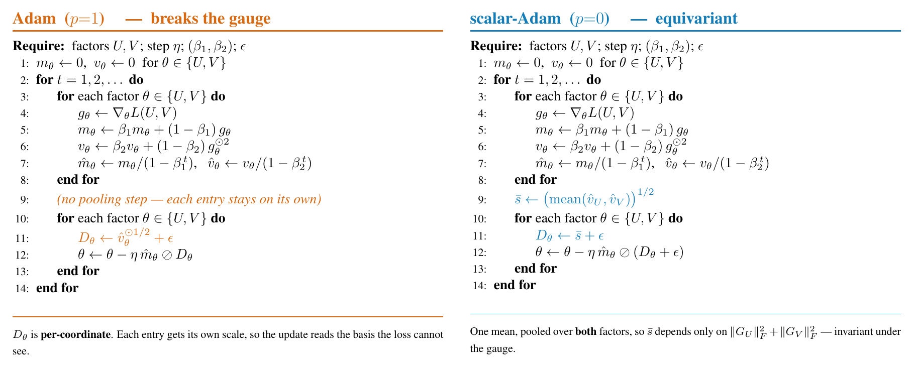

Preprint · 2026
The Loss Does Not See the Basis,
but Adam Does

The arXiv link goes live when the preprint is announced.
Preprint · 2026
The arXiv link goes live when the preprint is announced.

Gradient descent on a factored model $W = UV^\top$ is implicitly biased toward low-rank solutions, while Adam, from the same small initialization, is not. We trace the difference to the gauge symmetry of the loss, its invariance under $(U,V) \mapsto (UQ, VQ)$. Gradient flow's low-rank mechanism is available to an optimizer only if that optimizer is gauge-equivariant — a condition necessary for the transfer but not sufficient for low-rank recovery. Gradient descent, momentum, shared-scalar Adam, Muon, and Shampoo satisfy it. Adam, RMSProp, and the other coordinate-wise methods do not. A structure theorem characterizes the memoryless equivariant rules as exactly the Gram-determined left preconditioners, and a transfer theorem carries gradient flow's pathwise properties to common-scalar flows. A one-parameter family from coordinate-wise to shared-scalar preconditioning restores the bias monotonically, isolating anisotropy as the cause. In transformers, Adam separates two gauge-equivalent initializations at the first step and ends with the per-head invariants $W_Q^\top W_K$ $56\%$ apart. On two hyperspectral datasets at matched training loss, gradient descent cuts held-out error by $43$–$44\%$.
The objective $L(U,V) = f(UV^\top)$ is unchanged by
$$(U,V) \;\longmapsto\; (UQ,\; VQ), \qquad Q \in O(k),$$
because rotating the latent bases alters neither $W = UV^\top$ nor any prediction. The loss cannot see $Q$. The question is whether the optimizer can.



| method | recovery ↓ | erank | bal | train loss | notes |
|---|---|---|---|---|---|
| min-nuclear-norm | 0.0335 | 3.30 | — | — | convex reference |
| gauge-equivariant | |||||
| Muon | 0.0000 | 2.95 | 1.65 | 5.7e−8 | near-exact (6.8e−6 unrounded) |
| GD | 0.1312 | 4.51 | 0.06 | 6.5e−8 | Gunasekar anchor |
| scalar-Adam ($p{=}0$) | 0.2010 | 5.43 | 0.14 | 3.5e−8 | equivariant; flow proxy |
| Shampoo | 0.2856 | 6.95 | 1.47 | 4.5e−8 | |
| coordinate-wise | |||||
| Lion | 0.4248 | 10.58 | 7.35 | 8.0e−8 | |
| signum | 0.4454 | 7.83 | 1.79 | 6.5e−8 | low-rank-but-wrong |
| RMSProp | 0.5266 | 12.80 | 4.74 | 6.0e−8 | needs decay |
| Adafactor | 0.5430 | 10.72 | 3.40 | 5.6e−8 | factored diagonal still breaks it |
| Adam | 0.5734 | 14.37 | 5.37 | 1.2e−11 | Wilson anchor |
Matrix sensing, $40\times40$, rank-3 ground truth, no weight decay, three paired seeds, all runs continued to interpolation. Recovery is $\|W - X^\ast\|_F/\|X^\ast\|_F$; bal is $\|U^\top U - V^\top V\|_F$. The separation claim itself rests on the ten-seed ladder in the appendix, where it holds at every size up to $n{=}256$.
@article{singh2026lossbasis,
title = {The Loss Does Not See the Basis, but Adam Does},
author = {Singh, Devender},
journal = {arXiv preprint},
year = {2026},
url = {https://github.com/idevender/loss-basis-adam}
}